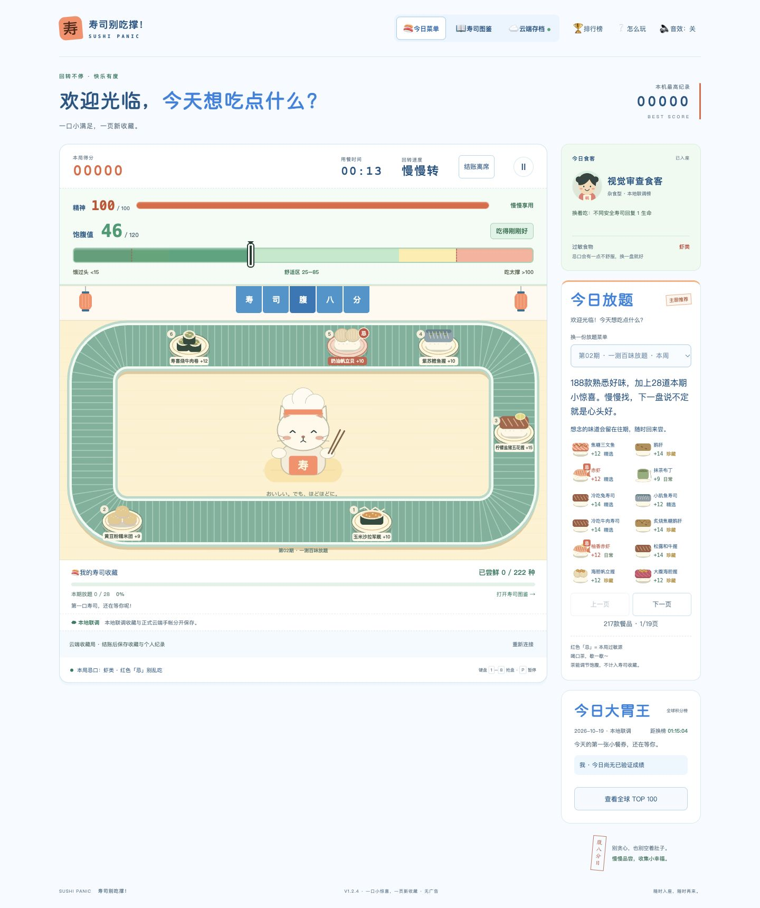
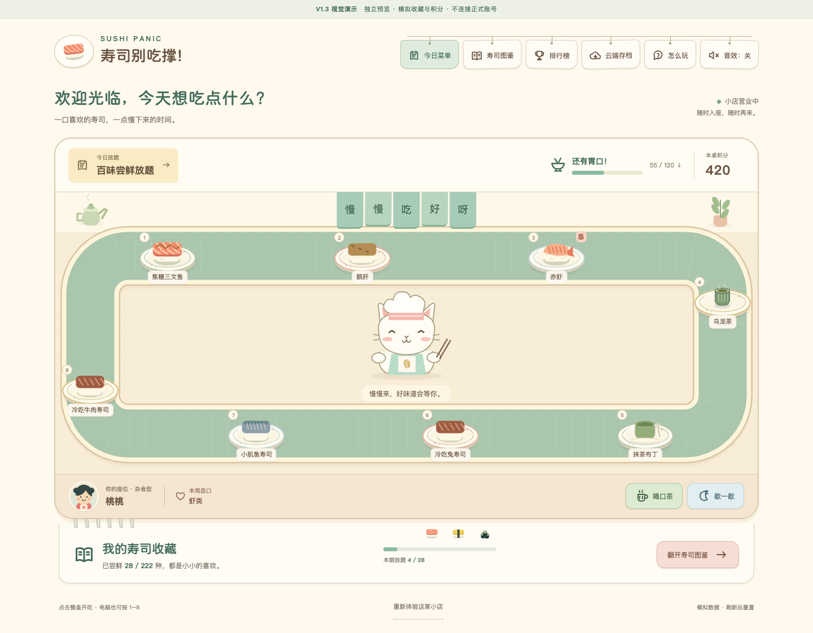

从功能页面，到一家寿司小店。
同为1440px宽度的本次截图，比较空间与视觉语言；数据分别来自本地隔离游戏与模拟Demo，不比较分数。
现有 V1.2.4
数值先于场景，角色/菜单/排行榜分列右侧。

V1.3 Cozy Sushi Bar · 设计演示
暖木餐台成为中心，角色融入场景，收藏页紧接餐台。

保留什么，改变什么
- 保留：原寿司插画、角色设定、回转结构、准确数值入口与既有功能入口。
- 改变：空间层级、色彩分工、原创SVG图标、餐盘质感、场景内的反馈与收藏纸页。
- 未展开：完整排行榜/账号/图鉴/全部主题；未接真实状态、未部署，方向确认后再逐步正式开发。